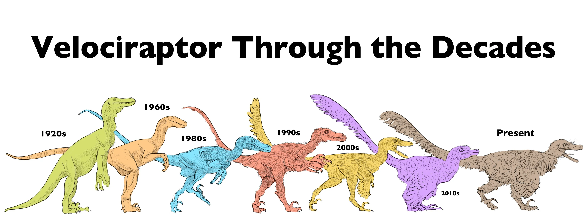
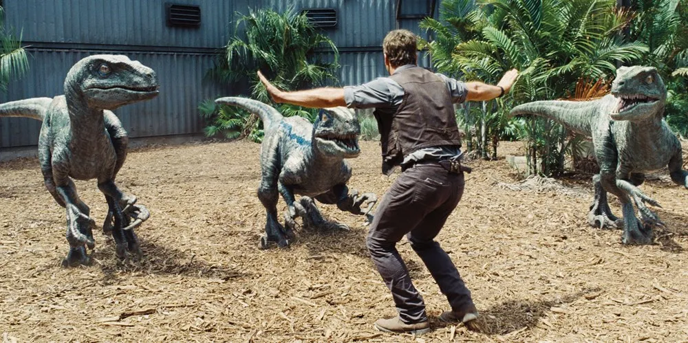
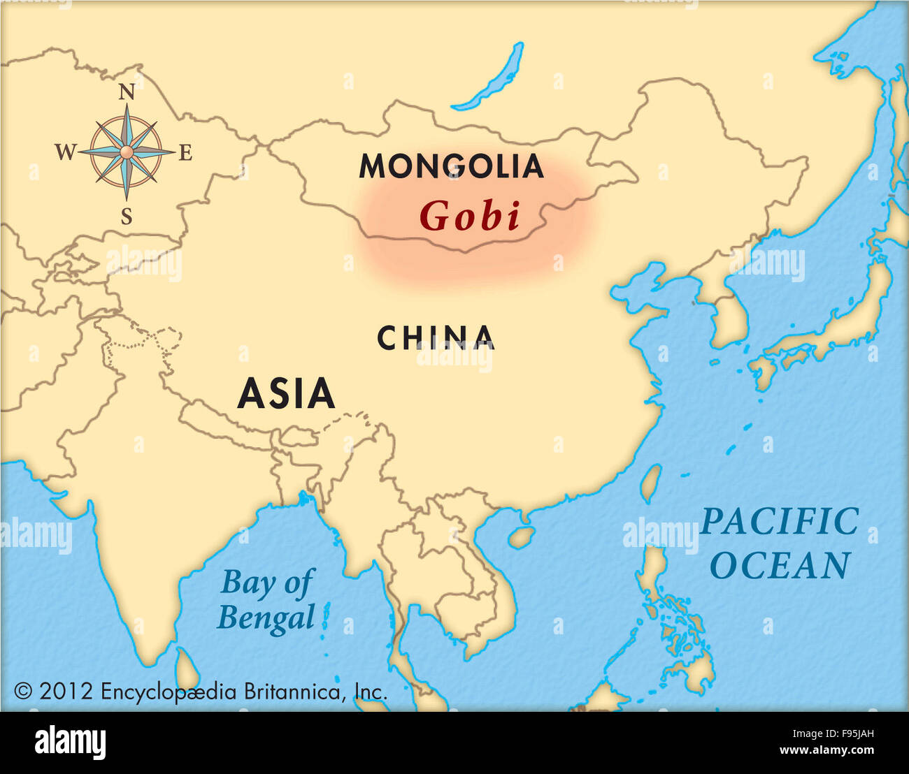
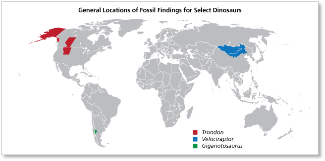
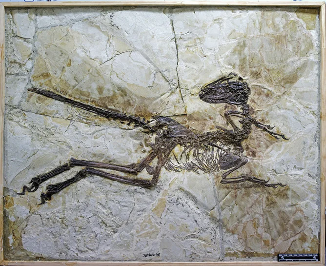
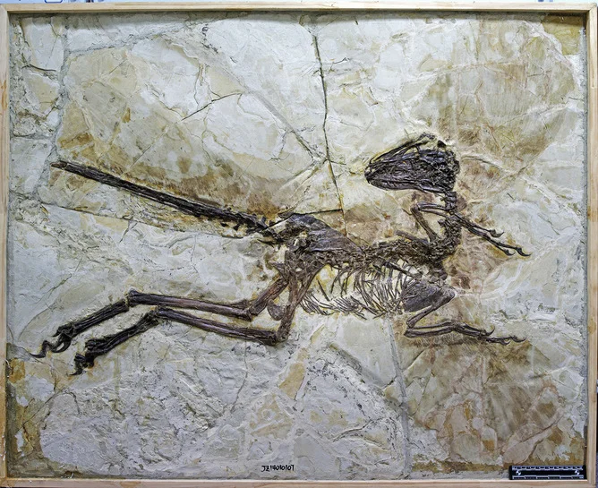

velociraptor,was founded in august 11 1923 in the Gobi Desert in Mongolia.This dinosaur was almost the size of a turkey but didnt act like one since it was apart of the predtory family of dinosaurs
this dinosaur created and mostly known for tricking other dinosaurs in the area for their small physique in bones and structers which made it nearly impossible for others to belive that they can be unharmful...or so they thought.These creaters are know for being the size of only 6 feet,that's nearly the size of a avrage basketball player! Thats not even all, they were known or recognized as a dromaeosauridae.The sizing of the dinosaur was absolutly unfrighting at first until they reached their e
average size is around 1.3 meters/6 feet weighted around 100 pounds in which it increased speed for its size and predatory branch of the dinosaurs, it contained a big brain which is why it makes this dinosaurs IQ run to a 7 in which humans had around 4.5, Not only did the dinosaur have such beautiful colors on the scales but feathers around the body they use the feathers as shields,nest,and to maintain weather conditions throughout the seasons or for another word they were being used through running.
the bone structure/anatomy was very hollow bones which also states why they are 100 pounds.they hunted solo for many reasons such as velociraptors never worked together really well and the fact that they have their own set of claws that hunt down super fast it starts with a blink of an eye, including of their sharp teeth which roamed around and ripped out fleshes of skin off of their prey it was even hard to mainstane how vicious they were.
| size range | 1.3 meters | 6 Feet |
|---|---|---|
| habitats | Gobi Desert | In Mongolia |
| Distribution | asia | Gobi Desert |
the name velociraptor means "smift seizer". They lived in desert-like conditions in the late creataceous of mongolia
there are currently two species that have been known/ found of the velociraptor:v: mongolia lienses and v osmolskae.
the velociraptors order is a genus of just small dromaeosauridae dinosaurs thatlived in asia during the late cretaleous epoch about 75 million t 71 million years ago. velociraptor subclass is a small beast "theropod" unaligned,Amor class is 13. In the flim jurassic park in 1993 with leading roles with Sam Neill and Ellie Sattler in this feel you can see the velociraptors being super big compared to its normal size paleontologist from the university of Utah talks about the many mistakes being shown throughout the film and the one thing that the paleontologist talks about is the sizing,shapes,and bone structers. In reality the velociraptor was not fully researched out through the flim and during another Jurassic film in 2015 we can see a almost better shot of the velcoiraptor but again few mistakes such as claws,feathers,and color.
velociraptors eats Shuvuuia and Protoceratops due to these animals being so small it was able to overlap and get to it's prey extremely fast. since the velociraptors IQ was so high the behavories were exremely clever it would trick it's prey into thinking that it was not going for it and such for its size it could even trick you from just looking at it,the actions that the velcoiraptor would do is to flake you out into thinking that it took of and did not care about you and once you looked awayit would come at you charging straight at you.
in the loction of where they where founded the adaptions of the heat and which is the reason why they have feathers on their bod to control their body heat. Now with velociraptor mongoliensis was first discovered in the Mongolian desert in 1924. In 2008, however, similar jaw bone fossils.
the person who discovered the famous speed dinosaur was Peter Kaisen,Djadokhta Formation, Gobi Desert, on 11 August 1923, Peter Kaisen discovered the first Velociraptor fossil known to science, and the skull was crushed so he himself had o rebuild it up again and started to learn the study of this strange living animal until the name was given velociraptor moving on with their breeding behavories they Paleontologists believe that Velociraptor like all dinosaurs reproduced by laying eggs. Velociraptor may have stayed with its nest to defend its eggs and offspring. A fossil of another meat-eating dinosaur Oviraptor was found in a nest with eggs and offspring.
The velociraptors predators there would have been several larger predators which probably actively hunted velociraptors, such as Alioramus, young Tarbosaurus, large Troodontids and big Oviraptorosaurs.
for their bones, they were filled with hollow bones and long legs, Velociraptor skimmed across the dunes chasing prey with sickle-shaped claws on its hands and feet and a mouth full of razor-sharp teeth. A large brain and eyes may have provided advanced sensory capabilities.
.jpg) Velociraptor's body was covered in feathers as close relatives, including Microraptor and Zhenyuanlong, have been found with preserved feathers. In 2007, the discovery of quill knobs on a Velociraptor fossil proved that this dinosaur had long feathers attaching from its second finger and up its arms, the fossil was being described as The Velociraptor's skull was long with an upturned snout and a long jaw with serrated teeth. Like other Dromaeosaurids, it had a long tail and large feet with three strongly curved claws similar to the wing bones of modern bird, and for its physical apperance of the velociraptor was Its sleek body was lightweight and built for speed, making it an effective predator. Its head was long and narrow, and it had a fairly large brain.

Velociraptor's body was covered in feathers as close relatives, including Microraptor and Zhenyuanlong, have been found with preserved feathers. In 2007, the discovery of quill knobs on a Velociraptor fossil proved that this dinosaur had long feathers attaching from its second finger and up its arms, the fossil was being described as The Velociraptor's skull was long with an upturned snout and a long jaw with serrated teeth. Like other Dromaeosaurids, it had a long tail and large feet with three strongly curved claws similar to the wing bones of modern bird, and for its physical apperance of the velociraptor was Its sleek body was lightweight and built for speed, making it an effective predator. Its head was long and narrow, and it had a fairly large brain.
